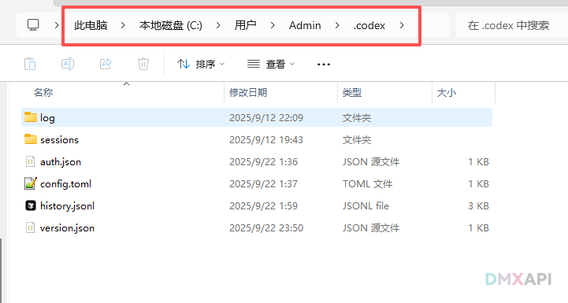
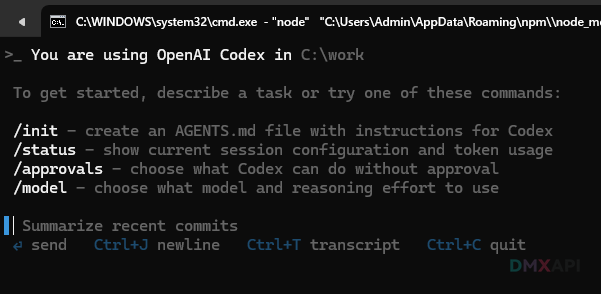
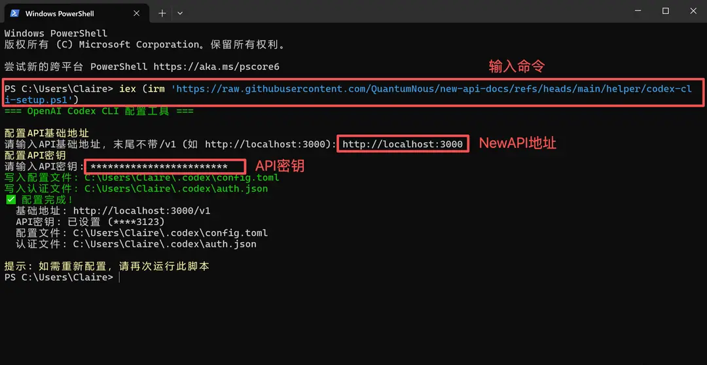
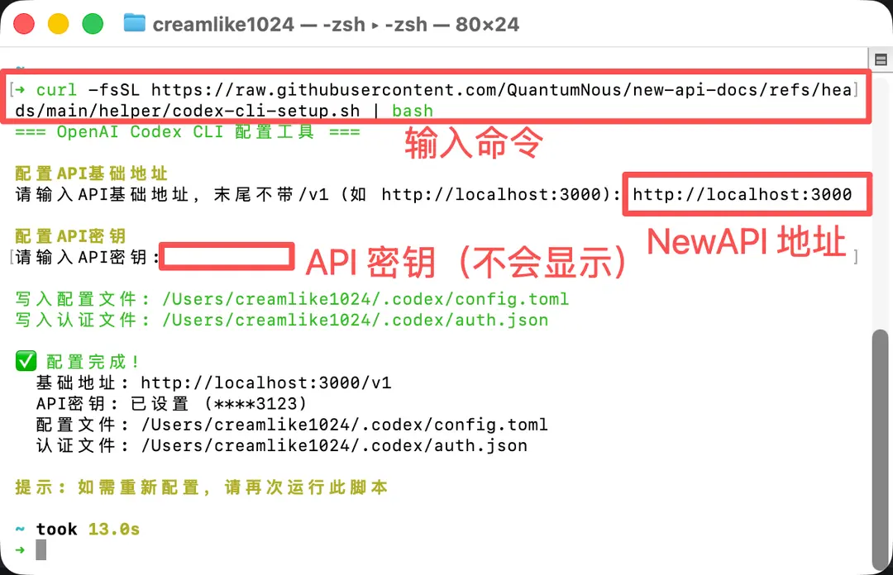

编程
OpenAI Codex 接入教程
Codex CLI 和 VS Code 客户端入口不同，但共用 .codex、auth.json、config.toml。
OpenAI Codex CLI / Codex 客户端
先把两个概念分开：Codex CLI 是终端入口，VS Code Codex 客户端是图形入口；它们不是同一个界面，但都会读取用户目录下同一套 .codex 配置。
项目介绍
Codex CLI 是 OpenAI 的终端编码代理，可在本地项目中读代码、改文件、生成补丁并运行命令。VS Code Codex 客户端通过扩展提供图形化入口。接入词元.fast 时，不要在两边分别乱填配置；抓住一个核心：用户目录里的 .codex 文件夹。
- CLI：在终端输入
codex启动。 - VS Code 客户端：在 VS Code 里安装 OpenAI Codex 扩展后打开面板。
- 共同配置：两者都读取
auth.json和config.toml。
安装 Codex CLI
npm install -g @openai/codex
codex --versionWindows 建议在 WSL2 中安装和运行；macOS / Linux 直接在终端执行。若没有 Node.js，请先安装 Node.js LTS。
VS Code Codex 客户端
- 打开 VS Code 扩展市场，搜索 OpenAI Codex。
- 认准发布者为 OpenAI 的扩展并安装。
- 安装后打开 Codex 面板；如果它找不到 Key 或模型，回到下面的
.codex配置文件检查。
找到 .codex 配置目录
Windows 通常是 C:\Users\你的用户名\.codex；macOS / Linux 通常是 ~/.codex。如果目录不存在，先运行一次 codex 或手动创建。Windows 用户建议先在文件资源管理器里勾选“隐藏的项目”和“文件扩展名”，避免找不到文件夹或保存错后缀。
auth.json：写入 API Key
{
"OPENAI_API_KEY": "你的词元.fast API Key"
}把词元.fast 控制台创建的密钥写入 auth.json。小白排错时先看这个文件：文件名必须是 auth.json，不是 auth.json.txt；Key 前后不要多复制空格。
config.toml：写入模型和 Provider
model = "gpt-5.5"
model_provider = "ciyuan-fast"
[model_providers.ciyuan-fast]
name = "词元.fast"
base_url = "https://ciyuan.fast/v1"
wire_api = "responses"
[history]
persistence = "save-all"
config.toml 负责模型和接口地址。默认模型可先写 gpt-5.5；如果控制台给你的可用模型名不同，就以控制台实际模型 ID 为准。先按 wire_api = "responses" 验证，只有在 Codex 版本明确提示不支持时再调整。
开始使用
cd /path/to/your/project
codex
# 进入后可切换模型
/model启动后先问一句简单问题，再让它读取当前目录文件。确认模型、权限、沙箱策略都正常后，再交给它做真实修改。
常见问题
- 401：检查
auth.json里的 API Key 是否复制完整。 - 模型不存在：确认
gpt-5.5在词元.fast 控制台可用；不可用时换成你实际开通的模型 ID。 - 客户端和 CLI 表现不一致：优先检查它们是否读取同一个用户目录下的
.codex。 - 旧教程脚本残留：不要再使用旧品牌脚本地址和 endpoint；统一用
https://ciyuan.fast/v1。
补充图文步骤
密钥创建通用步骤
先打开词元.fast 并登录，进入控制台的令牌管理/API Key 页面。点击添加令牌或创建密钥，名称可以写当前工具名。创建成功后立刻复制密钥，后面所有工具里的 API Key、Token、访问令牌都粘贴这一串内容。

Windows 先显示隐藏文件和后缀
在文件资源管理器里打开“查看”，勾选“文件扩展名”和“隐藏的项目”。否则你可能看不到 .codex 文件夹，也容易把 auth.json 保存成 auth.json.txt。

VS Code 客户端只是可选入口
如果你想用图形界面，就在 VS Code 扩展市场安装 OpenAI 官方 Codex 扩展。它不是配置 API 的地方；真正的 Key 和模型仍然写在用户目录的 .codex 文件夹里。

在 auth.json 写入 API Key
在 .codex 文件夹中新建或打开 auth.json，只放一项 OPENAI_API_KEY，值粘贴词元.fast 控制台生成的 API Key。这个文件负责“你是谁、用哪个 Key 付费”。

在 config.toml 写入模型配置
再打开 config.toml，填写 model、model_provider、base_url 和 wire_api。这个文件负责“请求发到哪里、默认用哪个模型”。CLI 和 VS Code 客户端都会读取这里。
